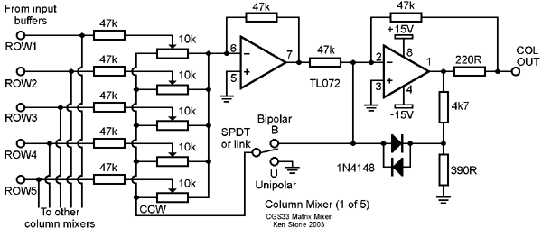

|
The matrix mixer is a five input, five output bipolar or unipolar DC couple mixer, for mixing control voltages or audio signals. In cases where you require several different mixes from a common set of signals, this module is ideal. Each output can be independently switched to operate in unipolar or bipolar mode. When in unipolar mode, all pots feeding that output behave in regular fashion, that is when the knob is fully counter-clockwise, no signal from the associated input passes into the mix. As the knob is advanced clockwise, a greater portion of the signal passes into the mix. In bipolar mode, each knob has a zero position mid-way through it's travel. Turning the knob anti-clockwise will add an increasing portion of a negative (inverted) version of the signal at the corresponding input, while turning the knob clockwise will add an increasing portion of the original signal to the mix.
A little on how it works:
Input buffers for the Matrix Mixer.

As is obvious from the circuit diagram, the matrix mixer is little more than a group of standard op-amp summing circuits and buffers. Any signal applied to an input is first buffered by a voltage follower based on a TL071 op-amp so as to not load down the output of whatever module is driving it. The buffered signal from each input are then fed to the inputs of five identical column mixers. The pots steer the signal to either the first or second op-amp of the mixer in bipolar mode, or the first op-amp or ground in unipolar mode. Any signal that is sent to the first op-amp is inverted, then mixed with any signal being sent to the second op-amp. This signal is then inverted again, and sent to the output jack.
Construction
The component overlay. Connections can be determined from the circuit diagram and the diagram below. Before you start assembly, check the board for etching faults. Look for any shorts between tracks, or open circuits due to over etching. Take this opportunity to sand the edges of the board if needed, removing any splinters or rough edges. When you are happy with the printed circuit board, construction can proceed as normal, starting with the resistors first, followed by the IC socket if used, then moving onto the taller components. Take particular care with the orientation of the polarized components such as electrolytics, diodes, transistors and ICs. When inserting ICs into sockets, take care not to accidentally bend any of the pins under the chip. Also, make sure the notch on the chip is aligned with the notch marked on the PCB overlay. Before inserting the pots, it is a good idea to flatten the kinks out of the mounting pins, as these tend to put too much stress on the pot during insertion, leading to breakage. The very top row of pots overhang the edge of the board, so take care when lining these up. This is so boards can be stacked close together for cascading. If you do cascade the boards, there are two resistors at the bottom of the board that will need to be soldered on the copper side to get them out of the way. On the main board there are five jumper locations marked U, B. Connecting the two holes marked by U set that mixer column to unipolar mode, while connecting the two holes marked by B set that mixer column to bipolar mode. You can use links here if you wish to permanently wire the mixer into one mode of operation, or you can run wires to SPDT switches to be able to switch between modes as required. Notes:
Parts list This is a guide only. Parts needed will vary with individual constructor's needs. The board is no longer stocked. This article is for reference only.
Can't find the parts? See the parts FAQ to see if I've already answered the question. Also see the CGS Synth discussion group.
Article, art & design copyright 2001 by Ken Stone
| |||||||||||||||||||||||||||||||||||||||||||